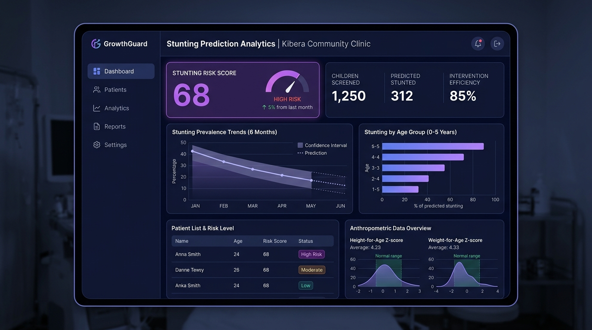
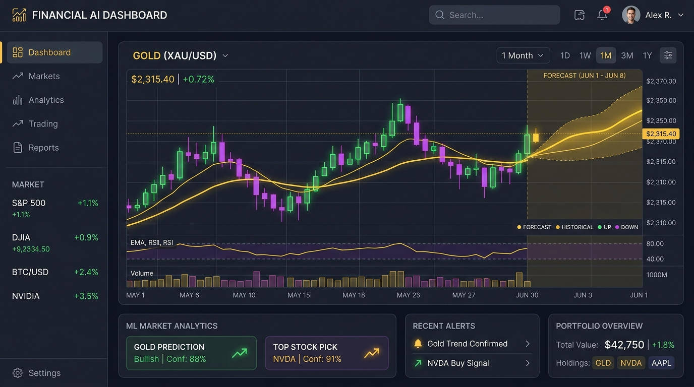

Halo, Saya
Muhammad Antariksa
Lulusan Informatika | Machine Learning & Software Engineer
Lulusan Informatika yang berfokus pada pengembangan sistem cerdas, Machine Learning, dan rekayasa perangkat lunak. Suka membangun aplikasi web interaktif yang menyelesaikan masalah nyata menggunakan data dan teknologi modern.
Teknologi & Keahlian Utama
Muhammad Antariksa
S1 Teknik Informatika
Kenapa Memilih Saya?
Memiliki kombinasi analitis data komputasi machine learning serta kemampuan rekayasa web frontend/backend yang siap diimplementasikan langsung pada ekosistem industri.
Menghubungkan Algoritma Machine Learning dengan Pengalaman Pengguna Berdampak.
Sebagai lulusan Informatika, saya berdedikasi membangun aplikasi cerdas berkinerja tinggi. Fokus utama saya mencakup pembuatan model machine learning yang akurat, pengolahan data time series & kesehatan, serta pengemasan model ke dalam antarmuka web interaktif yang siap diakses pengguna maupun stakeholder bisnis.
Proyek Unggulan
Berikut adalah showcase karya aplikasi web berbasis Machine Learning yang telah dideploy dan siap diuji secara langsung oleh Tech HR.

Stunting Prediction App
Platform web interaktif yang dirancang untuk membantu memprediksi, mendeteksi secara dini, serta menganalisis risiko stunting pada anak berdasarkan indikator kesehatan antropometri menggunakan model komputasi yang akurat.

Analisis Prediksi Harga Emas
Sistem analisis dan peramalan berbasis web untuk memprediksi tren pergerakan harga komoditas emas. Menggunakan pendekatan machine learning / time series forecasting untuk membantu pengambilan keputusan investasi atau konversi aset.
Tertarik Membangun Proyek Bersama?
Saya selalu terbuka untuk berdiskusi tentang peluang kerja, rekrutmen tim engineering, atau proyek Machine Learning dan Software Development.